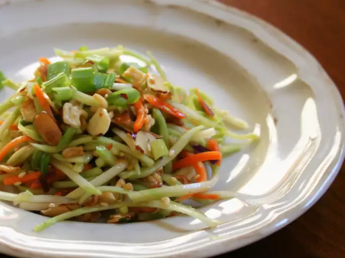

Crunchy Ramen Broccoli Slaw

Description
This broccoli slaw recipe was passed around for years in my grandmother's beauty salon. She took it to every church supper. It was on the table every Thanksgiving and Christmas.
Ingredients
- ¼ cup butter
- 2 (3 ounce) packages Oriental-flavor ramen noodle soup, seasoning packet reserved
- ½ cup slivered almonds
- ¼ cup sesame seeds
- 1 (16 ounce) package broccoli coleslaw mix
- ½ cup chopped green onion
- ½ cup salad oil
- ½ cup white sugar
- ¼ cup apple cider vinegar
- 2 tablespoons soy sauce